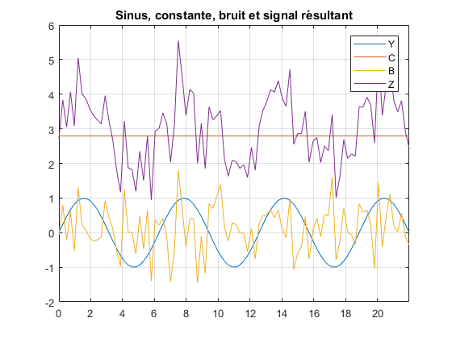

Exercice 1 : Signaux simples
Contents
Question 1
Calcul du domaine temporel, compris entre 0 et 7 * pi avec un pas de pi / 13 :
X = 0:pi/13:7*pi;
Calcul des différents sinaux simples :
% fonction sinus Y = sin(X); % fonction constante à 2.8 C = 2.8 * ones(size(X)); % bruit gaussien de moyenne 0.1 et de variance 0.4 B = sqrt(0.4) .* randn(size(X)) + 0.1;
Calcul de la somme des signaux :
Z = Y + C + B;
Calcul de la moyenne de Z :
meanZ = mean(Z)
meanZ =
3.0176
Calcul de la variance de Z :
varZ = var(Z)
varZ =
0.9671
Question 2
Affichage de tous les signaux :
plot(X, Y, X, C, X, B, X, Z); title("Sinus, constante, bruit et signal résultant"); grid on; xlim([0 7*pi]); legend("Y", "C", "B", "Z");